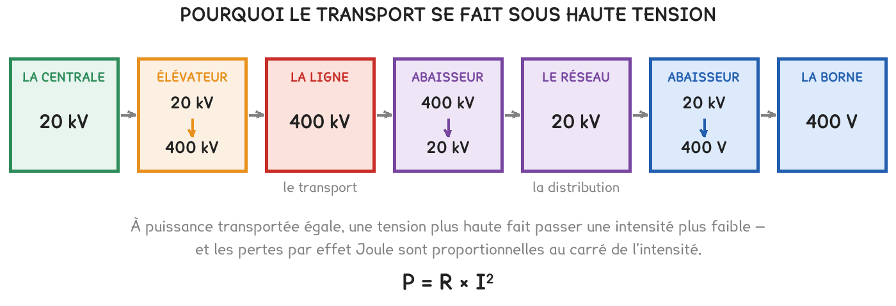

Tle Bac Pro CTRM
Entre la centrale et la borne, la tension change plusieurs fois. Un seul appareil la fait monter et descendre, et un seul mot dit dans quel sens il travaille.
3 exercices · 22 items d'entraînement · 1 repli · 2 figures
Savoirs travaillés
L’électricité de la borne a été produite loin, dans une centrale. Sur le chemin, sa tension change : elle monte pour voyager, puis redescend avant d’arriver.

Un seul appareil fait monter ou descendre la tension : le transformateur. Celui qui la fait monter s’appelle un élévateur, celui qui la fait descendre un abaisseur. C’est le même appareil, branché dans un sens ou dans l’autre.
Entre la ligne et la borne, la tension redescend en deux fois. La ligne à 400 000 V arrive d’abord sur un abaisseur qui la ramène à 20 000 V : c’est le réseau de distribution. Le dépôt y est raccordé, et son transformateur fait la dernière descente, de 20 000 V à 400 V.
C’est la réponse à une partie de la situation : le gestionnaire annonce 20 000 V parce que c’est la tension du réseau qui passe près du dépôt, pas celle des bornes.
Le nom dit ce que fait l’appareil, pas où il se trouve. Un transformateur « près des camions » n’est pas un élévateur parce qu’il les alimente. On compare les deux tensions, et rien d’autre.
La question c) du polycopié demande une hypothèse, pas une preuve : la séance 2 la vérifie. Une hypothèse se formule avec ce qu’on sait déjà.
I = P ÷ U, la puissance retournée
Pour une même puissance, plus la tension est basse, plus l’intensité est grande.
Pour aller plus loin
Une petite ville peut appeler 10 MW, soit 10 000 000 W. Sous 400 V, il faudrait faire passer 10 000 000 ÷ 400 = 25 000 ampères dans les câbles.
Le câble d’une maison est prévu pour quelques dizaines d’ampères. Vingt-cinq mille ampères demanderaient des câbles énormes, et ils chaufferaient quand même. C’est cette chaleur que la séance 2 va chiffrer.
Exercice · ELEC
Au pied d’une éolienne, un transformateur reçoit 690 V de la génératrice et envoie 20 000 V vers le réseau. Élévateur ou abaisseur ?
Exercice · ELEC
Quelle intensité faudrait-il pour transporter 4 MW sous 400 V ?
Exercice · ELEC
Formuler, en deux phrases, une hypothèse qui explique pourquoi on ne transporte pas l’électricité en 400 V depuis la centrale.
On remplit chaque case, puis on vérifie la série entière d’un coup.
Série · ELEC
Série · ELEC
Série · ELEC
Série · ELEC
| Élévateur, abaisseur | le même appareil, le transformateur, dans un sens ou dans l’autre |
| On transporte haut, on livre bas | la tension monte pour voyager et redescend près de l’utilisateur |
| I = P ÷ U | à puissance égale, une tension basse fait une intensité forte |
Cette page détaille la séance 1 de la séquence. Elle ne remplace pas les documents distribués et ne donne aucun corrigé.